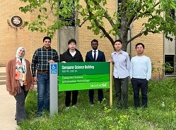
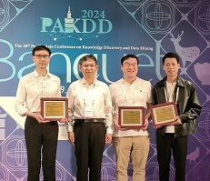
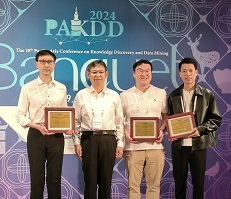

Notable School News:
Research
Teaching
Publications
Systems
Group
Services
Misc
Research Interest:
Trustworthy Artificial Intelligence and Internet of Things, spanning the areas of:
- Machine Learning
- Cybersecurity
- Internet of Things
Prospective students: please read this short note before emailing me.
Biosketch:
I am an Associate Professor and Associate Chair for Academic Affairs in the Department of Computer Science at Missouri University of Science and Technology, where I am also a faculty investigator of four research centers: Intelligent Systems Center (ISC), Center for Intelligent Infrastructure (CII), High-Performance Computing Center (HPCC), and Center for Biology Research (CBR). Prior to joining Missouri S&T in December 2019, I was a Scientist and Program Lead at A*STAR, Singapore's foremost research institute. I earned my Ph.D. in Electrical and Computer Engineering from the National University of Singapore (#8 by QS, #19 by THE (Times Higher Education, UK), #26 by U.S. News in the latest Global university rankings). My current research centers on Trustworthy AI and IoT, with specific focus on adversarial machine learning, explainable and robust AI for medicine and healthcare, secure and privacy-preserving federated learning, and time series analysis for IoT and edge computing. I have received five Best Paper awards or nominations. I am a member of AAAI and ACM, and a Senior Member of IEEE.
Teaching
- CS5001 - Introduction to Deep Learning, Spring 2024
- CS5420 - Introduction to Machine Learning, Fall 2023
- CS3402 - Introduction to Data Science, Spring 2023
- CS5001 (CS5420 since FS23) - Introduction to Machine Learning, Fall 2022
- CS3001 (CS3402 since SP23) - Introduction to Data Science, Spring 2022
- CS6407 - Internet of Things with Data Science, Fall 2021
- CS6001 (CS6407 since FS21) - Internet of Things with Data Science, Spring 2021
- CS6001 (CS6407 since FS21) - Internet of Things with Data Science, Fall 2020
- CS5001 - Internet of Things with Applied Data Science, Spring 2020
Publications
Full list contains graphic illustrations.
Code associated with papers are open-sourced.
From 2020 onward:
- [PAKDD'24] Adversarial-Robust Transfer Learning for Medical Imaging via Domain Assimilation [pdf] [arXiv] [slides]
X. Chen and T. Luo
28th Pacific-Asia Conference on Knowledge Discovery and Data Mining (PAKDD), May 2024.
Acceptance rate: 18.5% (133/720) (oral presentations)
Best Paper Runner-Up Award (0.28%; 2/720)
- [PAKDD'24] Unmasking Dementia Detection through Masking Input Gradients: A JSM Approach to Model Interpretability and Precision [pdf] [arXiv] [poster]
Y. Mustafa and T. Luo
28th Pacific-Asia Conference on Knowledge Discovery and Data Mining (PAKDD), May 2024.
Acceptance rate: 24.3% (175/720; 133 oral + 42 poster presentations, all appearing the same in proceedings as FULL papers)
- [PerCom'24] Stitching Satellites to the Edge: Pervasive and Efficient Federated LEO Satellite Learning [arXiv] [slides] [DOI: 10.1109/PerCom59722.2024.10494442]
M. Elmahallawy and T. Luo
22nd IEEE International Conference on Pervasive Computing and Communications (PerCom), March 2024, pp. 80-89.
Acceptance rate: 14.5% (23/158)
Among the 158 full submissions, 15 (including ours) were accepted as full papers and 8 accepted as short papers.
Best Paper Award candidate (1.9%; 3/158)
- [AAAI'24] LRS: Enhancing Adversarial Transferability through Lipschitz Regularized Surrogate [arXiv] [poster version] [code] [DOI: 10.1609/aaai.v38i6.28430]
T. Wu, T. Luo, and D. C. Wunsch
38th AAAI Conference on Artificial Intelligence (AAAI), vol. 38, no. 6, pp. 6135-6143, February 2024.
Acceptance rate: 19% (2342/12100)
Among the 12100 submissions to the main track, 2238 were desk-rejected.
- [AAAI'24] CR-SAM: Curvature Regularized Sharpness-Aware Minimization [arXiv] [poster version] [code] [DOI: 10.1609/aaai.v38i6.28431]
T. Wu, T. Luo, and D. C. Wunsch
38th AAAI Conference on Artificial Intelligence (AAAI), vol. 38, no. 6, pp. 6144-6152, February 2024.
Acceptance rate: 19% (2342/12100)
Among the 12100 submissions to the main track, 2238 were desk-rejected.
- [JSAC'24] Communication-Efficient Federated Learning for LEO Satellite Networks Integrated with HAPs using hybrid NOMA-OFDM [arXiv] [DOI: 10.1109/JSAC.2024.3365885]
M. Elmahallawy, T. Luo, and K. Ramadan
IEEE Journal on Selected Areas in Communications (JSAC), vol. 42, no. 5, pp. 1097-1114, May 2024.
- [Healthcom'23] Diagnosing Alzheimer's Disease using Early-Late Multimodal Data Fusion with Jacobian Maps [arXiv] [slides] [DOI: 10.1109/Healthcom56612.2023.10472348]
Y. Mustafa and T. Luo
IEEE International Conference on E-health Networking, Application & Services (Healthcom), December 2023, pp. 49-55.
- [Globecom'23] Secure and Efficient Federated Learning in LEO Constellations using Decentralized Key Generation and On-Orbit Model Aggregation [arXiv] [DOI: 10.1109/GLOBECOM54140.2023.10436841]
M. Elmahallawy, T. Luo, and M. I. Ibrahem
IEEE Global Communications Conference (GLOBECOM), December 2023, pp. 5727-5732.
- [TrustCom'23] Crowdsourcing-based Model Testing in Federated Learning
Y. Yi, H. Lv, T. Luo, L. Liu, L. Cui
22nd IEEE International Conference on Trust, Security and Privacy in Computing and Communications (TrustCom), November 2023.
- [ComMag'23] Catching Elusive Depression via Facial Micro-Expression Recognition [arXiv] [DOI: 10.1109/MCOM.001.2300003]
X. Chen and T. Luo
IEEE Communications Magazine, vol. 61, no. 10, pp. 30-36, October 2023.
- [ICIP'23] GNP Attack: Transferable Adversarial Examples via Gradient Norm Penalty [arXiv] [DOI: 10.1109/ICIP49359.2023.10223158]
T. Wu, T. Luo, and D. C. Wunsch
30th IEEE International Conference on Image Processing (ICIP), October 2023, pp. 3110-3114.
- [PR'23] YOGA: Deep Object Detection in the Wild with Lightweight Feature Learning and Multiscale Attention [arXiv (new)] [code] [DOI: 10.1016/j.patcog.2023.109451]
R. Sunkara and T. Luo
Pattern Recognition, vol. 139, pp. 109451, July 2023.
- [EDGE'23] LightESD: Fully-Automated and Lightweight Anomaly Detection Framework for Edge Computing [arXiv] [DOI: 10.1109/EDGE60047.2023.00032]
R. Das and T. Luo
IEEE International Conference on Edge Computing (EDGE), July 2023, pp. 150-158.
Acceptance rate: 17% (full paper)
- [MDM'23] One-Shot Federated Learning for LEO Constellations that Reduces Convergence Time from Days to 90 Minutes [arXiv] [DOI: 10.1109/MDM58254.2023.00020]
M. Elmahallawy and T. Luo
24th IEEE International Conference on Mobile Data Management (MDM), July 2023, pp. 45-54.
- [PAKDD'23] TSI-GAN: Unsupervised Time Series Anomaly Detection using Convolutional Cycle-Consistent Generative Adversarial Networks [pdf] [arXiv] [code] [DOI: 10.1007/978-3-031-33374-3_4]
S.S. Saravanan, T. Luo, and M.V. Ngo
27th Pacific-Asia Conference on Knowledge Discovery and Data Mining (PAKDD), May 2023, pp. 39–54.
Acceptance rate: 16.5% (143/869) The initial number 822 quoted in the acceptance email was later corrected to 869 in the Conference Summary Report presented at the conference closing ceremony.
- [ICC'23] Optimizing Federated Learning in LEO Satellite Constellations via Intra-Plane Model Propagation and Sink Satellite Scheduling [arXiv] [DOI: 10.1109/ICC45041.2023.10279316]
M. Elmahallawy and T. Luo
IEEE International Conference on Communications (ICC), May 2023, pp. 3444-3449.
- [TechRep] Digital Twin Graph: Automated Domain-Agnostic Construction, Fusion, and Simulation of IoT-Enabled World
J. Du and T. Luo
Technical report, arXiv preprint 2304.10018, Apr 2023.
- [ARAI'23] Black-Box Attack using Adversarial Examples: A New Method of Improving Transferability [DOI: 10.1142/S2811032322500059]
T. Wu, T. Luo, and D. C. Wunsch
World Scientific Annual Review of Artificial Intelligence, Vol. 1, pp. 2250005, February 2023.
- [BigData'22] AsyncFLEO: Asynchronous Federated Learning for LEO Satellite Constellations with High-Altitude Platforms [arXiv] [DOI: 10.1109/BigData55660.2022.10021101]
M. Elmahallawy and T. Luo
IEEE International Conference on Big Data, December 2022, pp. 5478-5487.
Acceptance rate: 19% (122/633; full paper)
- [SSCI'22] Learning Deep Representations via Contrastive Learning for Instance Retrieval [arXiv] [DOI: 10.1109/SSCI51031.2022.10022224]
T. Wu, T. Luo, and D. C. Wunsch
IEEE Symposium Series On Computational Intelligence (SSCI), December 2022, pp. 1501-1506.
- [WCSP'22] FedHAP: Fast Federated Learning for LEO Constellations Using Collaborative HAPs [arXiv] [slides] [DOI: 10.1109/WCSP55476.2022.10039157]
M. Elmahallawy and T. Luo
14th International Conference on Wireless Communications and Signal Processing, November 2022, pp. 888-893.
- [ESORICS'22] Long-Short History of Gradients is All You Need: Detecting Malicious and Unreliable Clients in Federated Learning [pdf] [arXiv] [video] [code] [DOI: 10.1007/978-3-031-17143-7_22]
A. Gupta, T. Luo, M. V. Ngo, and S. K. Das
The 27th European Symposium on Research in Computer Security (ESORICS), September 2022, pp. 445-465.
Acceptance rate: 19%
- [ECML PKDD'22] No More Strided Convolutions or Pooling: A New CNN Building Block for Low-Resolution Images and Small Objects [pdf] [arXiv] [video] [code] [DOI: 10.1007/978-3-031-26409-2_27]
R. Sunkara and T. Luo
European Conference on Machine Learning and Principles and Practice of Knowledge Discovery in Databases (ECML PKDD), September 2022, pp. 443-459.
Acceptance rate: 26% (242/932)
- [TIOT'21] Adaptive Anomaly Detection for Internet of Things in Hierarchical Edge Computing: A Contextual-Bandit Approach [video] [DOI: 10.1145/3480172]
M.V. Ngo, T. Luo, and Q.S. Quek
ACM Transactions on Internet of Things (TIOT).
Vol. 3, No. 1, pp. 1-23, October 2021.
- [WiOpt'21] Data-Free Evaluation of User Contributions in Federated Learning [DOI: 10.23919/WiOpt52861.2021.9589136]
H. Lv, Z. Zheng, T. Luo, F. Wu, S. Tang, L. Hua, R. Jia and C. Lv
International Symposium on Modeling and Optimization in Mobile, Ad Hoc, and Wireless Networks (WiOpt), October 2021.
- [AAMAS'21] A Blockchain-Enabled Quantitative Approach to Trust and Reputation Management with Sparse Evidence
L. Zeynalvand, T. Luo, E. Andrejczuk, D. Niyato, S.G. Teo, and J. Zhang
International Conference on Autonomous Agents and Multiagent Systems (AAMAS), May 2021.
Acceptance rate: 24.8% (152/612)
- [Globecom'20] Coordinated Container Migration and Base Station Handover in Mobile Edge Computing [arXiv] [video] [code]
M.V. Ngo, T. Luo, H.T. Hoang, and Q.S. Quek
IEEE Global Communications Conference (GLOBECOM), December 2020.
- [KDD'20w] Man-in-the-Middle Attacks on MQTT-based IoT Using BERT based Adversarial Message Generation
H. Wong and T. Luo
26th ACM SIGKDD International Conference on Knowledge Discovery and Data Mining (KDD), Workshop on AIoT, August 2020.
- [ICDCS'20] Contextual-Bandit Anomaly Detection for IoT Data in Distributed Hierarchical Edge Computing [DOI: 10.1109/ICDCS47774.2020.00191]
M.V. Ngo, T. Luo, H. Chaouchi, and Q.S. Quek
IEEE International Conference on Distributed Computing Systems (ICDCS), December 2020, pp. 1227-1230.
- [Huge'20] Scalable Distributed Machine Learning with Huge Data for IoT and Scientific Discovery
T. Luo and S. K. Das
National Science Foundation (NSF) Large Scale Networking Workshop on Huge Data, Chicago, IL, April 13-14, 2020.
- [AAAI'20] COBRA: Context-aware Bernoulli neural networks for reputation assessment [arXiv]
L. Zeynalvand, T. Luo, and J. Zhang
34th AAAI Conference on Artificial Intelligence (AAAI), New York, NY, Feb 2020, pp. 7317-7324.
Acceptance rate: 20%
- [AAAI'20] Mechanism design with predicted task revenue for bike sharing systems [arXiv]
H. Lv, C. Zhang, Z. Zheng, T. Luo, F. Wu and G. Chen
34th AAAI Conference on Artificial Intelligence (AAAI), New York, NY, Feb 2020, pp. 2144-2151.
Acceptance rate: 20%
- [AAAI'20w] Adaptive Anomaly Detection for IoT Data in Hierarchical Edge Computing [arXiv]
M.V. Ngo, H. Chaouchi, T. Luo, and Q.S. Quek
34th AAAI Conference on Artificial Intelligence (AAAI), Workshop on AIoT, New York, NY, Feb 2020.
- [TOPS'20] CrowdPrivacy: Publish More Useful Data with Less Privacy Exposure in Crowdsourced Location-based Services [DOI: 10.1145/3375752]
F-J. Wu and T. Luo
ACM Transactions on Privacy and Security (TOPS),
Vol. 23, No. 1, pp. 6:1-25, February 2020.
Before 2020 (prior to Missouri S&T): the below is a partial list; see full list which contains graphic illustrations.
- [IoT-J'19] Improving IoT data quality in mobile crowd sensing: A cross validation approach [DOI: 10.1109/JIOT.2019.2904704]
T. Luo, J. Huang, S. S. Kanhere, J. Zhang, and S. K. Das
IEEE Internet of Things Journal (IoT-J), vol. 6, no. 3, pp. 5651-5664, June 2019.
A cross validation (CV) approach that seeks a validating crowd to ratify the quality of sensor data contributed by the a contributing crowd. By making an exploration-exploitation tradeoff, a unified solution is offered to two disparate cases: reinforce obscure truth and discover hidden truth. (See illustration.)
- [ICC'18] Distributed anomaly detection using autoencoder neural networks in WSN for IoT [DOI: 10.1109/ICC.2018.8422402]
T. Luo and S. Nagarajan
IEEE International Conference on Communications (ICC), May 2018.
This paper is the first that introduces autoencoder neural networks (ANN), a deep learning model, into wireless sensor networks (WSN) for distributed anomaly detection. It contradicts the general belief that deep learning is not suitable for WSN, by (1) making deep learning extremely shallow and (2) dividing and allocating computation load to sensors and the IoT cloud with a two-part algorithm. (See illustration.)
- [AAIM'18] Achieving location truthfulness in rebalancing supply-demand distribution for bike sharing [DOI: 10.1007/978-3-030-04618-7_21]
H. Lv, F. Wu, T. Luo, X. Gao, and G. Chen
12th International Conference on Algorithmic Aspects in Information and Management (AAIM), pp. 256-267, December 2018.
Best Student Paper Award (2%; 1/50)
- [ComMag'17] Sustainable incentives for mobile crowdsensing: Auctions, lotteries, and trust and reputation systems [DOI: 10.1109/MCOM.2017.1600746CM]
T. Luo, S. S. Kanhere, J. Huang, S. K. Das, and F. Wu
IEEE Communications Magazine, vol. 55, no. 3, pp. 68-74, March 2017.
This survey paper provides a technical overview and analysis of six incentive mechanism design frameworks: auction, lottery, trust and reputation system, bargaining game, contract theory, and market-driven mechanism.
- [TIST'16] Incentive mechanism design for crowdsourcing: an all-pay auction approach [pdf] [DOI: 10.1145/2837029]
T. Luo, S. K. Das, H-P. Tan, and L. Xia
ACM Transactions on Intelligent Systems and Technology (TIST), vol. 7, no. 3, pp. 35:1-26, February 2016.
The most adopted auctions in incentive mechanism design so far have been winner-pay auctions (WPA), in which only winners (who outbid others and will therefore receive reward) need to pay their bids. By contrast, all-pay auctions (APA) require all the participants regardless of who win the auction to pay their bids. This apparently sounds unreasonable, but when applied to crowdsourcing, it makes perfect sense and gains two important advantages over WPA. (This paper builds on our INFOCOM'14 paper.)
- [TMC'16] Incentive mechanism design for heterogeneous crowdsourcing using all-pay contests [DOI: 10.1109/TMC.2015.2485978]
T. Luo, S. S. Kanhere, S. K. Das, and H-P. Tan
IEEE Transactions on Mobile Computing (TMC), vol. 15, no. 9, pp. 2234-2246, September 2016.
Despite that crowdworkers
are typically heterogeneous (in abilities, costs, etc.), the daunting challenge of modeling and analyzing such scenarios has restricted researchers to choosing homogeneous models in which all the worker types follow a single, common distribution (Bayesian belief). This paper addresses this challenge using an asymmetric all-pay auction model with a prize tuple. Not only does it achieve better performance, but it also uncovers a counter-intuitive and interesting property called strategy autonomy, in which the asymmetric equilibrium collapses into a symmetric one.
- [TMC'16] Competition-based participant recruitment for delay-sensitive crowdsourcing applications in D2D networks [DOI: 10.1109/TMC.2016.2524590]
Y. Han, T. Luo, D. Li, and H. Wu
IEEE Transactions on Mobile Computing (TMC), vol. 15, no. 12, pp. 2987-2999, December 2016.
To reduce the large delay in Device-to-Device (D2D) networks, two distributed approaches were proposed that closely approximate a centralized, dynamic programming algorithm: (1) divide-and-conquer with Voronoi cells, (2) task splitting and delegation.
- [INFOCOM'15] Crowdsourcing with Tullock contests: A new perspective [DOI: 10.1109/INFOCOM.2015.7218641]
T. Luo, S. S. Kanhere, H-P. Tan, F. Wu, and H. Wu
The 34th IEEE International Conference on Computer Communications (INFOCOM), April 2015, pp. 2515-2523.
Acceptance rate: 19% (316/1640)
Best Paper Award finalist (0.3%; 5/1640)
What is a Tullock contest? Think it as a lucky draw! While auctions have dominated the realm of mechanism design for decades, this paper suggests Tullock contests as a better alternative, on the basis that it is less competitive and more conducive to larger participation.
- [TMC'15] Quality of contributed service and market equilibrium for participatory sensing [DOI: 10.1109/TMC.2014.2330302]
C-K. Tham and T. Luo
IEEE Transactions on Mobile Computing (TMC), vol. 14, no. 4, pp. 829-842, April 2015.
Characterizing QoS for crowdsensing is a challenge, and this work proposes a new metric called Quality of Contributed Service (QCS) to aggregate individual quality of contributions by taking information quality and time sensitivity into account. We analyze this metric using a market-based supply-and-demand model.
- [INFOCOM'14] Profit-maximizing incentive for participatory sensing [DOI: 10.1109/INFOCOM.2014.6847932] [Much enhanced version: ACM TIST'16]
T. Luo, H-P. Tan, and L. Xia
The 33rd IEEE International Conference on Computer Communications (INFOCOM), April 2014, pp. 127-135.
Acceptance rate: 19% (319/1650)
All-pay auction + adaptive prize/reward (see the short abstract of TIST'16 or an illustration).
- [ICTC'12] Enhancing Responsiveness and Scalability for OpenFlow Networks via Control-Message Quenching [DOI: 10.1109/ICTC.2012.6386857]
T. Luo, H-P. Tan, P. C. Quan, Y-W. Law, and J. Jin
International Conference on Infocom Technology Convergence (ICTC), October 2012, pp. 348-353.
Best Paper Award (0.7%; 3/423)
Full list contains graphic illustrations.
Google Scholar
DBLP (Download BiBTeX using the 2nd icon in front of each paper)
Systems and Testbeds
In addition to my theoretical research, I believe it is equally invaluable to develop real systems or testbeds to validate theoretical innovations in a more convincing manner.
Group
- PhD students - current:
Tao Wu, FS21-- (to defend in summer'24)
Xiaohui Chen, FS22--
Jiadi Du, FS22--
Yasmine Mustafa, SP23--
Shyam S. Saravanan, SP24--

 

- PhD students - graduated:
Mohamed Elmahallawy (solely-advised in the US), Jan 2022--Feb 2024 (defended on March 1, 2024)
Thesis: Secure and privacy-preserving federated learning with rapid convergence in LEO satellite networks
Leonit Zeynalvand (co-supervised with Nanyang Technological University), 2016-2021
Thesis: A holistic approach to trust and reputation management in big data
Mao V. Ngo (co-supervised with Singapore University of Technology and Design), 2018-2020
Thesis: Mobile edge computing with machine learning for the Internet of Things
- Master's students - graduated:
Raja Sunkara (Missouri University of Science and Technology), Aug'21-May'23
Thesis: Computer vision in adverse conditions: small objects, low-resolution images, and edge deployment
Shyam Sundar Saravanan (Missouri University of Science and Technology), Jan'21-May'23
Thesis: Time series anomaly detection using generative adversarial networks
Professional Services
- Grant Panelist / Reviewer:
National Science Foundation (NSF), Panelist: 2021
Euregio Science Fund (EGTC, Europe), Reviewer: 2021
U.S. Department of Energy (DOE), OASCR, Reviewer: 2022
U.S. Department of Energy (DOE), Idaho National Lab, Reviewer: 2023
- External P&T and Award Reviewer:
Faculty Promotion & Tenure external reviewer, University of Washington, 2021
Ralph E. Powe Junior Faculty Award reviewer, Oak Ridge Associated Universities (ORAU), 2024
- External PhD Thesis Examiner:
Deakin University, Australia, 2023-24
DA-IICT, India, 2023
- Journal Editorial Board:
Area Editor, Pervasive and Mobile Computing (Elsevier), 2021-present. ⇗
Area Editor, Ad Hoc Networks, 2019-present. ⇗
Associate Editor, Annual Review of Artificial Intelligence, 2021-present.
Associate Editor, Wireless Communications and Mobile Computing, 2018-present. ⇗
Associate Editor, Telecom, 2018-present.
Guest Editor, Sensors (Localization and Tracking for Internet of Things), 2022-2023.
Guest Editor, Mobile Information Systems (Big Data Management and Analytics for Mobile Crowd Sensing), 2015-2016.
Guest Editor, Journal of Sensor and Actuator Networks (MAC Protocols in Wireless Sensor Networks), 2015-2016.
- Journal Advisory Board:
Sci: 2018-present.
- Conference Program Chair:
IEEE PerCom CASPer 2016
ACM ComNet-IoT 2016
IEEE ISSNIP PSC Symposium 2014
- Conference Publication Chair:
IEEE PerCom 2023
IEEE PerCom 2024 (honor of service)
- Conference Session Chair:
AAAI 2024: Machine Learning
AAAI 2024: Computer Vision
PAKDD 2023: Federated Learning
IEEE ICC 2023: Learning & Networks
IEEE INFOCOM 2022: Machine Learning
IEEE INFOCOM 2021: Attack and Anomaly Detection
IEEE INFOCOM 2020: Internet of Things
- Conference Program Committee:
2024: AAAI | ICC (Machine Learning for Communications and Networking Track)
2023: WoWMoM | ICC | WCNC
2022: INFOCOM | WoWMoM | ICC | WCNC
2021: INFOCOM | AAAI | WoWMoM | ICC | WCNC | MASS | PST
2020: INFOCOM | WoWMoM | ICC | WCNC | ComNet-IoT | PST (Privacy, Security and Trust)
2019: INFOCOM | WoWMoM | ICC | WCNC | MASS | MSWiM | PerCom CASPer | ComNet-IoT | IWCMC-ML (machine learning) | PST (Privacy, Security and Trust)
2018: INFOCOM | WoWMoM | MASS | Globecom | ICCCN | PerCom CASPer | ComNet-IoT | PST (Privacy, Security and Trust)
2017: DCOSS | PerCom CASPer | UIC (Ubiquitous Intelligence and Computing)
2016: WCNC | MobiSPC | AAMAS Trust | PST (Privacy, Security and Trust) | BIH (Brain Informatics and Health)
2015: WCNC | MobiSPC | SenseApp | ICCVE | CCBD (Cloud Computing and Big Data) | IBDC (Big Data in Crowdsensing)
2014: WCNC | SenseApp | ICCVE | IOV (Internet of Vehicles)
2013: WCNC | SenseApp | ICCVE | AMI (Ambient Intelligence) | IoT-SC (IoT for Smart Cities)
2012: ICCVE | KICSS (Knowledge, Information and Creativity Support Systems)
- Conference Organizing Committee:
IEEE ISSNIP 2015
IEEE ISSNIP 2014 (International Conference on Intelligent Sensors, Sensor Networks, and Information Processing)
- Journal Reviewer (Top 1% Reviewer in Computer Science 2017-2018):
IEEE Transactions on Neural Networks and Learning Systems (TNNLS) (2023--present)
IEEE Transactions on Knowledge and Data Engineering (TKDE) (2018--present)
IEEE Transactions on Dependable and Secure Computing (TDSC) (2022--present)
IEEE Transactions on Mobile Computing (TMC) (2009--present)
IEEE Transactions on Affective Computing (TAFFC) (2023--present)
IEEE Transactions on Parallel and Distributed Systems (TPDS) (2020--2021)
IEEE Transactions on Wireless Communications (TWC) (2013--2014)
IEEE Transactions on Vehicular Technology (TVT) (2010--2014)
IEEE Transactions on Cognitive Communications and Networking (TCCN) (2016--2018)
IEEE Transactions on Network and Service Management (TNSM) (2017--2019)
IEEE Internet of Things Journal (IOT-J) (2019--present)
IEEE Journal on Selected Areas in Communications (JSAC) (2008--)
IEEE Signal Processing Magazine (2021)
IEEE Network (2015--2019)
IEEE Computer (2018--2019)
IEEE Pervasive Computing (2017--2019)
IEEE Journal on Selected Areas in Communications (JSAC) (2008--2009)
IEEE/ACM Transactions on Networking (ToN) (2010--2012; 2023-present)
ACM Transactions on Sensor Networks (TOSN) (2021--present)
ACM Transactions on Privacy and Security (TOPS) (2021--present)
ACM Transactions on Intelligent Systems and Technology (TIST) (2021--present)
ACM Transactions on Internet Technology (TOIT) (2018--present)
ACM Mobile Computing and Communications Review (MC2R) (2009--2010)
ACM/SAGE - Collective Intelligence (2021)
Elsevier - Pervasive and Mobile Computing (PMC) (2013--2019; Editor thereafter) [Outstanding Reviewer 2016]
Elsevier - Ad Hoc Networks (ADHOC) (2013--2019; Editor thereafter)
Elsevier - Computer Networks (COMNET) (2008--2019)
Elsevier - Computer Communications (COMCOM) (2017--2019)
Elsevier - Journal of Parallel and Distributed Computing (JPDC) (2018--2021)
Elsevier - Information Systems (IS) (2018--2019)
Elsevier - Future Generation Computer Systems (FGCS) (2018--2020)
Elsevier - Digital Communications and Networks (DCAN) (2018--2019)
Springer - Artificial Intelligence Review (2023--present) (2022 IF: 12.0)
Springer - Peer-to-Peer Networking and Applications (PPNA) (2020)
MDPI - Artificial Intelligence (2021)
MDPI - Applied Sciences (2021)
MDPI - Healthcare (2021)
MDPI - Remote Sensing (2020)
MDPI - Sensors (2016--present)
Wiley - Wireless Communications and Mobile Computing (WCMC) (2018--2021)
Wiley - International Journal of Network Management (NEM) (2020)
Wiley - Discrete Dynamics in Nature and Society (2019)
IET Intelligent Transport Systems (ITS) (2018)
IEICE Transactions on Fundamentals (2014)
- Conference Reviewer (besides TPC):
ICNP 2021, MSWiM 2018, PIMRC 2018, Globecom 2017, ICDM 2016, ACM KDD 2015, MASS 2014, ICC 2013, Globecom 2012, DySPAN 2010, INFOCOM 2009, SECON 2009, Globecom 2009, ICC 2009, INFOCOM 2008, SECON 2008, MASS 2008, ICDCS
2008, Globecom 2008, MobiCom 2007, MSWiM 2007, MSWiM 2006... (full list)
Miscellaneous
|


.png){kind=link}
{kind=link}
{kind=link}
 _ Top Universities 2024 (no.8).jpg){kind=link}
{kind=link}
{kind=link}
{kind=link}
{kind=link}
{kind=link}